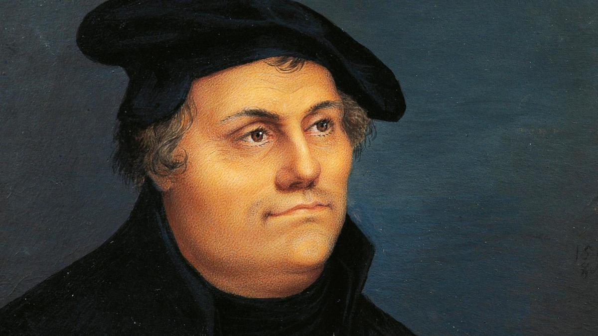
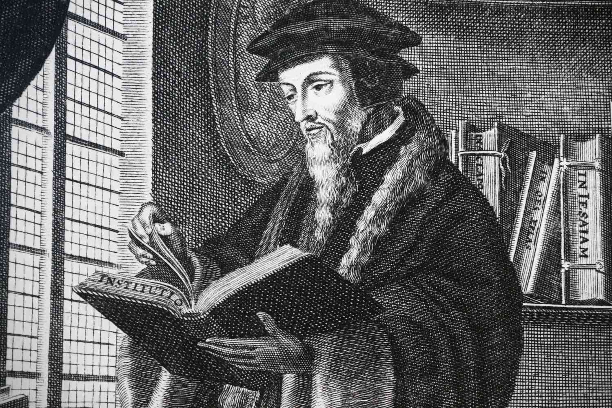
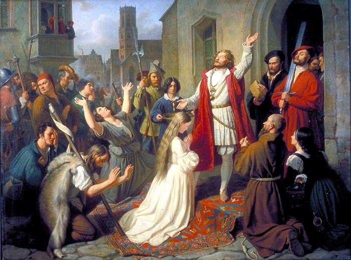

The Reformation was a major religious and political movement in the 16th century that led to the fragmentation of the Catholic Church and the creation of various Protestant denominations. Initiated by figures like Martin Luther, John Calvin, and Huldrych Zwingli, the Reformation sought to address perceived abuses and corruption within the Catholic Church, including issues such as the sale of indulgences and the lack of scriptural authority. It was both a theological and political upheaval that resulted in significant changes in religious practice, church governance, and the relationship between church and state. The Reformation had profound implications for the development of Western Christianity and European society, influencing everything from religious doctrines to political boundaries.
One of the most pivotal moments of the Reformation was Martin Luther’s posting of the 95 Theses in 1517. Luther, a German monk and professor of theology, was deeply troubled by the Catholic Church’s practice of selling indulgences—certificates that purportedly absolved individuals from the punishment of sin. In response to this practice, Luther wrote his 95 Theses, a list of propositions critiquing the sale of indulgences and other church practices that he believed were contrary to Christian teachings. Luther’s act of posting these theses on the door of the Wittenberg Castle Church, although initially intended as a scholarly debate, rapidly gained public attention and sparked widespread debate across Europe. This moment is often cited as the beginning of the Reformation. Luther’s ideas spread quickly, thanks in part to the invention of the printing press, which allowed for the mass production of his writings. His challenge to the authority of the Pope and the Catholic Church led to a schism, with many followers breaking away to form new Protestant denominations. Luther’s actions not only redefined religious practice but also influenced political and social structures across Europe, marking a significant shift in the religious and cultural landscape of the time.
Learning about the Reformation is crucial for understanding the origins of religious diversity in Christianity and the significant transformations within Western religion. The Reformation was a pivotal event that led to the creation of various Protestant denominations, each with distinct theological beliefs and practices. Before the Reformation, the Catholic Church held a monolithic position over Christian doctrine and practice in Europe. However, figures like Martin Luther, John Calvin, and others challenged the Church’s authority and proposed alternative interpretations of Christianity. By examining the Reformation, one can appreciate how these religious shifts influenced not only the establishment of new denominations such as Lutheranism, Calvinism, and Anglicanism but also the development of diverse religious traditions that persist today. This understanding is essential for comprehending the religious landscape of modern Europe and the broader Christian world, which is marked by a rich tapestry of beliefs and practices that originated from these historical changes.
The Reformation was not just a religious upheaval but also a catalyst for political and social reform across Europe. The fragmentation of the Catholic Church led to a reconfiguration of political power, as rulers and states grappled with the implications of religious dissent. For instance, the establishment of the Church of England under Henry VIII not only altered religious practices in England but also shifted political power dynamics, leading to the dissolution of monasteries and redistribution of their wealth. Similarly, the Reformation influenced the governance of other European states, as rulers adopted Protestantism or remained Catholic, impacting their alliances, conflicts, and domestic policies. Studying the Reformation provides valuable insights into how religious movements can drive broader social and political changes, shaping the governance, culture, and economic structures of societies. It helps in understanding the interconnectedness of religion and politics and the long-term effects of such transformations on modern governance and societal norms.
The Reformation had profound and lasting effects on modern thought and culture. It contributed significantly to the rise of individualism and the questioning of traditional authority, ideas that are central to contemporary Western values. The emphasis on personal interpretation of religious texts fostered a culture of individual responsibility and critical thinking, which extended beyond religion into other areas such as science, politics, and philosophy. For example, the Reformation's challenge to established religious authority encouraged a spirit of inquiry and skepticism that influenced the Enlightenment and subsequent intellectual developments. Additionally, the Reformation impacted art, literature, and education, as new ideas about human nature, society, and morality emerged. Understanding the Reformation allows one to trace the origins of many modern cultural and intellectual movements and to appreciate how historical events have shaped contemporary values and practices. This awareness provides a deeper context for understanding modern societal attitudes and cultural trends that have roots in the Reformation period.
The Reformation had profound political consequences throughout Europe, fundamentally altering the landscape of power and governance. Initially, the Reformation emerged as a religious movement, but its implications quickly extended into the political realm. As various European states navigated the shifting religious tides, rulers and political leaders had to address the ramifications for their sovereignty and authority. The most striking example of this is the English Reformation, where King Henry VIII’s break with the Catholic Church led to the establishment of the Church of England. This political maneuver was driven not only by theological disagreements but also by personal and political motives, including Henry’s desire to annul his marriage to Catherine of Aragon. By severing ties with the Pope and declaring himself the Supreme Head of the Church of England, Henry VIII gained control over church revenues and consolidated his power, which had significant political implications for England. This move set the stage for subsequent shifts in religious and political alignments, influencing English governance and contributing to the broader Protestant Reformation in Europe.
The Reformation also played a crucial role in the rise of state sovereignty and nationalism, particularly evident in the Holy Roman Empire and the German states. Prior to the Reformation, the Catholic Church wielded significant influence over both spiritual and temporal matters, but the fragmentation of Christianity weakened the papal authority and bolstered the power of regional rulers. In the Holy Roman Empire, leaders such as Frederick III of Saxony supported Martin Luther and embraced Lutheranism as a means to assert their independence from both the Emperor and the Pope. This shift allowed local rulers to exert greater control over religious practices within their territories, enhancing their political authority and contributing to the rise of nationalism. The Peace of Augsburg in 1555, which allowed rulers to choose either Catholicism or Lutheranism for their territories, exemplified this trend. The Reformation thus accelerated the process of political fragmentation and the emergence of nation-states, shaping the modern political map of Europe.
The political upheavals of the Reformation era also had lasting impacts on the formation of modern European states and their political structures. The Reformation’s challenges to the Catholic Church’s universal authority contributed to the decline of feudalism and the rise of centralized monarchies. The religious conflicts that followed, including the Thirty Years' War, further shaped political boundaries and governance structures. In countries like France, the Wars of Religion between Catholics and Huguenots (French Protestants) led to the eventual edict of toleration under Henry IV, which marked a significant shift towards religious coexistence and the centralization of power. Similarly, the Reformation’s influence extended to the Scandinavian countries, where rulers adopted Protestantism and used it to reinforce their political power and consolidate their states. The Reformation thus set the stage for the development of modern political institutions, including the rise of parliamentary systems, the separation of church and state, and the evolution of national identities, all of which are integral to understanding contemporary European political dynamics.
The Reformation was not just a religious revolution; it also triggered significant social transformations across Europe. The breakdown of the Catholic Church's universal authority and the rise of Protestant denominations led to shifts in social norms, practices, and hierarchies. For example, the Protestant emphasis on personal faith and individual interpretation of the Scriptures led to a greater focus on literacy and education. As Protestant reformers advocated for the translation of the Bible into vernacular languages, literacy rates increased as more people sought to read and understand religious texts on their own. This emphasis on personal piety and individual interpretation diminished the hierarchical role of the clergy and promoted the idea that individuals could engage directly with their faith. The proliferation of print culture, driven by the invention of the printing press, further accelerated these social changes by making religious and secular texts more widely accessible, fostering a more informed and engaged populace. As a result, the Reformation contributed to the spread of new ideas and the questioning of traditional authorities, laying the groundwork for the development of modern democratic and participatory societies.
The Reformation also led to significant changes in how religious and social integration was perceived and implemented across different regions. As Protestantism took root, it often replaced the monolithic religious framework of Catholicism with a more fragmented and diverse religious landscape. This transition was marked by varying degrees of tolerance and conflict, depending on the region and the dominant religious faction. In some areas, the Reformation fostered a sense of religious community and social cohesion among Protestants, who sought to create a cohesive and unified society based on shared religious principles. In others, the Reformation exacerbated existing social tensions and led to religious conflicts, such as the French Wars of Religion and the Thirty Years' War, which had profound social implications. The varying degrees of religious tolerance and conflict during the Reformation period contributed to the development of more pluralistic societies, where religious diversity became a defining feature of social integration. This period thus played a crucial role in shaping the evolving dynamics of religious and social integration in Europe.
The daily life of an average person during the Reformation varied widely depending on their social status, region, and religious affiliation. For the common people, daily life was deeply intertwined with the religious and social upheavals of the period. In Protestant regions, the emphasis on personal piety and Bible reading led to changes in religious practices. Services were conducted in vernacular languages rather than Latin, making religious services more accessible and allowing ordinary people to engage more directly with their faith. This shift also affected daily routines, as individuals were encouraged to read the Bible at home, leading to increased literacy and a focus on personal religious study. Economically, the Reformation period saw changes in traditional agrarian practices, with shifts in land ownership and changes in feudal obligations. For many, daily life was characterized by the demands of subsistence agriculture, local trade, and participation in emerging Protestant communal activities. In Catholic regions, traditional practices continued, with the Catholic Church maintaining its influence over local customs and social norms. Regardless of region, the Reformation era was marked by a transition from medieval to early modern practices, influencing everything from religious observance to economic activities and social interactions.
The Reformation also brought about significant changes in family dynamics and gender roles. The Protestant Reformation's critique of monasticism and celibacy emphasized the importance of family life and marriage. Reformers such as Martin Luther and John Calvin advocated for the sanctity of marriage as a social and religious institution, which had implications for family roles and gender relations. In Protestant regions, marriage became a more central aspect of Christian life, and clerical celibacy was abandoned, leading to the establishment of a clergy that could marry and lead family lives. This shift influenced societal expectations regarding gender roles within the family. Women in Protestant communities were often encouraged to take on more active roles in family and church life, reflecting a view of marriage as a partnership rather than a hierarchical relationship. However, while these changes provided more opportunities for women in certain contexts, they also reinforced traditional gender norms and domestic responsibilities within the family. The Reformation thus played a complex role in shaping gender roles, promoting both change and continuity in family structures.
The Reformation significantly impacted economic life in Europe by altering the relationship between religion and economics. In regions where Protestantism took hold, such as in parts of Germany and Scandinavia, the dissolution of monasteries and the expropriation of church lands led to a redistribution of wealth and property. The Catholic Church's extensive landholdings were often seized and repurposed, which created opportunities for local nobility and emerging bourgeois classes to acquire substantial assets. This redistribution fostered the growth of capitalist economies in Protestant regions, as land and resources were put to more productive uses and commercial activities expanded. Moreover, the Protestant emphasis on personal responsibility and thrift contributed to the development of a "Protestant work ethic," which promoted diligence, savings, and economic success. This work ethic was believed to underpin the economic prosperity of Protestant regions, supporting the rise of industrialization and economic growth. In contrast, Catholic regions experienced different economic trajectories, with varying degrees of resistance to these Protestant-driven economic changes. Overall, the Reformation's impact on economic life was profound, leading to shifts in property ownership, the development of capitalist practices, and the promotion of economic values that influenced the trajectory of European economies.
During the Reformation, education and cultural life underwent significant transformations driven by religious and societal changes. The Protestant emphasis on individual scripture reading and personal piety led to an increased focus on literacy and education, as reading the Bible became central to religious practice. This shift prompted the establishment of more schools and universities in Protestant regions, where education was increasingly accessible to a broader segment of society. Figures like Martin Luther advocated for educational reform, including the promotion of education for both boys and girls, which contributed to a rise in literacy rates and a more educated populace. Culturally, the Reformation influenced art and literature, with Protestant reformers favoring works that aligned with their religious ideals and promoted simplicity and direct engagement with faith. Iconoclasm, or the rejection of religious images, became prevalent in many Protestant areas, leading to a shift in artistic focus from religious iconography to more secular and humanistic themes. In Catholic regions, the Counter-Reformation spurred a revival of baroque art and architecture, aimed at inspiring awe and reinforcing the Catholic faith. Overall, the Reformation profoundly impacted education by expanding access and reforming curricula, while also shaping cultural expressions and artistic developments across Europe.
The Reformation, while primarily a religious and social movement, also had an indirect impact on the realm of science. This period, spanning from the early 16th to the early 17th century, saw significant shifts in intellectual thought that influenced scientific progress. The upheaval caused by the Reformation created an environment where traditional structures were questioned, which extended to scientific inquiry and discovery. As religious institutions lost their monopoly over intellectual life, scholars began to explore new ideas and methods. Key figures such as Nicolaus Copernicus, Andreas Vesalius, and Paracelsus made groundbreaking contributions during this era. Their work laid the foundation for modern science, challenging established norms and paving the way for future scientific advancements.
In the Reformation era, the scientific field of astronomy underwent a major transformation, significantly influenced by the work of Nicolaus Copernicus. Prior to this period, the geocentric model, which posited that the Earth was the center of the universe, was widely accepted. Copernicus, however, introduced the heliocentric model in his seminal work, "De Revolutionibus Orbium Coelestium" (On the Revolutions of the Celestial Spheres), published in 1543. His theory proposed that the Sun, rather than the Earth, was the center of the universe, challenging the long-held Ptolemaic system and sparking intense debate among scholars and religious authorities. This revolutionary idea marked the beginning of a shift towards a more empirical and observational approach in astronomy, ultimately leading to the Scientific Revolution.
In the realm of human anatomy, Andreas Vesalius made significant strides during the Reformation. His magnum opus, "De Humani Corporis Fabrica" (On the Fabric of the Human Body), first published in 1543, offered a detailed and accurate depiction of human anatomy based on meticulous dissection and observation. This work challenged the prevailing anatomical knowledge derived from Galen, who had relied on animal dissection rather than human subjects. Vesalius’s pioneering use of direct observation and detailed illustrations not only corrected many anatomical misconceptions but also established a new standard for medical science. His emphasis on empirical evidence and hands-
The Reformation period also saw significant developments in medical science through the work of Paracelsus, a Swiss physician and alchemist. Known for his contributions to toxicology and the use of chemicals in medicine, Paracelsus challenged the traditional Galenic approach to medicine, which was based on the balance of bodily humors. He advocated for a more empirical approach, emphasizing the role of chemicals and minerals in treatment. His work laid the groundwork for modern pharmacology and introduced the concept of specific remedies for specific ailments. Paracelsus’s innovative approach to medicine and his emphasis on the practical application of chemistry in health care represented a critical shift towards a more scientific understanding of disease and treatment.
The Reformation, a period marked by profound religious and social upheaval, also had a notable impact on philosophical thought. This era, spanning from the early 16th to the early 17th century, saw a departure from medieval scholasticism and a move towards new ways of thinking about knowledge, religion, and human existence. As the Reformation challenged established doctrines and authority, it created an intellectual climate that encouraged critical examination and debate. Key figures such as Michel de Montaigne, Francis Bacon, and Thomas Hobbes emerged during this time, contributing to the development of modern philosophy. Their works reflected and influenced the evolving ideas of the period, shaping the trajectory of Western thought.
During the Reformation, Michel de Montaigne emerged as a pivotal figure in philosophy with his development of the essay as a literary form. His seminal work, "Essays" (1580), provided a profound exploration of human nature, self-reflection, and skepticism. Montaigne’s introspective approach, characterized by personal anecdotes and philosophical musings, represented a departure from the dogmatic and systematic approaches of his predecessors. He questioned the certainty of knowledge and the reliability of human reason, reflecting the broader intellectual shift of the Reformation period towards individualism and subjective experience. Montaigne’s essays emphasized the complexity of human nature and the limitations of philosophical certainty, influencing subsequent generations of thinkers.
Francis Bacon, a leading figure of the early modern period, made substantial contributions to philosophy and the philosophy of science during the Reformation. His work, "Novum Organum" (1620), advocated for the empirical method and the systematic collection of knowledge through observation and experimentation. Bacon criticized the reliance on Aristotelian logic and the scholastic tradition, promoting instead an inductive approach to scientific inquiry. His ideas laid the groundwork for the development of the scientific method, emphasizing the importance of empirical evidence and the iterative process of hypothesis testing. Bacon’s influence on the philosophy of science was profound, helping to shape the course of modern scientific investigation and methodology.
Thomas Hobbes, another significant philosopher of the Reformation period, is best known for his work "Leviathan" (1651). In this influential text, Hobbes articulated his theory of social contract and political philosophy, which argued for a strong central authority to maintain order and prevent the chaos of the state of nature. Hobbes's ideas were shaped by the tumultuous events of the Reformation and the English Civil War, reflecting his concern for stability and security. His work challenged existing notions of governance and human nature, promoting a pragmatic approach to political organization. Hobbes’s contributions to political philosophy and his analysis of human behavior and social contract theory had a lasting impact on the field and on subsequent political thought.
The Reformation, which began in the early 16th century, was a pivotal period in European religious history, marked by a profound shift in the Christian Church and the emergence of various Protestant denominations. This movement was initiated by figures like Martin Luther and John Calvin, who challenged the doctrines and practices of the Roman Catholic Church. The Reformation led to significant religious transformations, including the establishment of Protestantism, the questioning of ecclesiastical authority, and a redefinition of religious practices and beliefs. The period was characterized by a heightened emphasis on personal faith and scripture, which had a profound impact on the religious, social, and cultural landscape of Europe.
Martin Luther, a seminal figure in the Reformation, is best known for his role in challenging the Roman Catholic Church's practices and doctrines. His act of nailing the 95 Theses to the door of the Wittenberg Castle Church in 1517 is often cited as the catalyst for the Reformation. Luther’s primary criticisms were directed at the sale of indulgences and the Church's authority over salvation. His theological positions, including justification by faith alone and the authority of Scripture over Church tradition, were central to his reformist agenda. Luther's translation of the Bible into German made the scriptures accessible to the general populace, empowering individuals to interpret religious texts independently and significantly altering the religious landscape of Europe.

Cr.: Inspirational Christians
John Calvin was another influential reformer whose ideas shaped the course of Protestantism during the Reformation. His work, "Institutes of the Christian Religion" (1536), laid out a systematic theology that emphasized the sovereignty of God, the necessity of grace, and the importance of predestination. Calvin’s interpretation of Protestant doctrine contributed to the development of Calvinism, which had a significant impact on the religious and political structures of various regions, particularly in Geneva. His emphasis on a disciplined and morally rigorous community influenced the development of Protestant ethics and governance, affecting not only religious practices but also social and political structures in areas where Calvinism took hold.

Cr.: Learn Religions
The Anabaptists represented a radical wing of the Reformation, advocating for a form of Christianity that emphasized adult baptism and the separation of church and state. Unlike other reformers, the Anabaptists rejected infant baptism, arguing that baptism should be a conscious choice made by adults who had reached an understanding of faith. This perspective led to the establishment of various Anabaptist communities and denominations, such as the Mennonites and the Hutterites. Their beliefs and practices, including a commitment to pacifism and communal living, challenged the religious and social norms of the time. The Anabaptists faced significant persecution from both Protestant and Catholic authorities, but their contributions to the diversity of Protestant thought and practice were significant.

Cr.: Epic World History
The Reformation exemplifies the transformative impact of print and communication technologies on society. Martin Luther’s 95 Theses, printed and disseminated widely through the newly invented printing press, played a crucial role in spreading Reformation ideas across Europe. The accessibility of printed materials allowed reformist ideas to reach a broad audience quickly and efficiently, accelerating the spread of Protestantism and facilitating religious debates. This demonstrates how advancements in communication technology can dramatically influence social and political movements, shaping public opinion and enabling the rapid dissemination of ideas. The Reformation era highlights the critical role that technology plays in shaping historical and cultural developments, a lesson that remains relevant in the digital age.
The Reformation brought about significant religious diversity and highlighted the need for tolerance and coexistence. As different Protestant denominations emerged, the period saw increased religious pluralism, with varying interpretations of Christianity coexisting alongside each other. This religious diversity, while sometimes leading to conflict, also prompted discussions about tolerance and the acceptance of differing beliefs. The ability of societies to navigate and manage religious diversity without descending into perpetual conflict remains a crucial lesson for contemporary societies. It emphasizes the importance of fostering dialogue and understanding among different religious and cultural groups to promote social harmony and coexistence.
The Reformation illustrates the complex interplay between religion and politics, showing how religious movements can intersect with political power and influence governance. For instance, the Reformation led to significant political changes, including the rise of Protestant states and the weakening of the Catholic Church’s influence in political affairs. Monarchs and political leaders often aligned themselves with reformist or counter-reformist factions to consolidate power and influence. This period underscores the ways in which religious beliefs and movements can shape political landscapes and vice versa. Understanding this intersection is crucial for comprehending how religious and political dynamics can influence each other and impact societal structures and governance.
The Protestant Reformation, which began in the early 16th century, was primarily catalyzed by Martin Luther’s critique of the Catholic Church’s practices and doctrines. Martin Luther, a German monk and theologian, famously nailed his "95 Theses" to the door of the Wittenberg Castle Church in 1517. This document criticized the Church's sale of indulgences—a practice where people paid money to the Church to reduce their time in purgatory. Luther’s actions were sparked by his deep concerns over the corruption and moral decay within the Church, which he believed had deviated from the true teachings of Christianity. His Theses, disseminated widely due to the recent invention of the printing press, ignited a wave of religious and political upheaval across Europe, leading to the establishment of Protestantism and significant changes in the religious landscape.
One of the most significant outcomes of the Reformation was the establishment of multiple Protestant denominations, each with its own interpretations of Christian doctrine. The Reformation gave rise to various branches such as Lutheranism, Calvinism, and Anglicanism, each diverging from the Roman Catholic Church in different ways. Lutheranism, founded by Martin Luther, emphasized justification by faith alone and the authority of Scripture. Calvinism, led by John Calvin, introduced the concept of predestination and a more rigorous moral code. Anglicanism, under the reign of Henry VIII, was shaped by both political and religious motives, resulting in a Church of England that maintained some Catholic traditions while rejecting papal authority. These diverse Protestant denominations contributed to the rich tapestry of Christianity and significantly altered the religious and political map of Europe.
The invention of the printing press by Johannes Gutenberg in the mid-15th century played a crucial role in the spread of Reformation ideas. The printing press allowed for the mass production of texts, making it easier for Martin Luther and other reformers to disseminate their writings and critiques across Europe. Luther’s "95 Theses" and other reformist literature were rapidly reproduced and distributed, reaching a broad audience far beyond the confines of academic or ecclesiastical circles. This technological advancement enabled the rapid exchange of ideas and facilitated the growth of a reformist movement that was both wide-reaching and impactful. The printing press thus became an essential tool in the spread of Protestantism and the challenge to the Catholic Church’s hegemony.
The Reformation had profound political and social impacts, significantly altering the governance and societal structures in Europe. The rise of Protestantism often led to shifts in political power, with rulers aligning themselves with reformist movements to assert independence from the Catholic Church. For instance, the Peace of Augsburg in 1555 allowed German princes to choose either Lutheranism or Catholicism as the official religion of their states, thereby formalizing the religious divisions within the Holy Roman Empire. Additionally, the Reformation prompted social changes, including the questioning of traditional authorities and the promotion of individual conscience and personal faith. The movement also influenced education and literacy, as the emphasis on reading the Bible led to increased interest in learning and the establishment of schools and universities.
In response to the Protestant Reformation, the Catholic Church initiated its own Counter-Reformation, aiming to address the criticisms raised by reformers and to reclaim lost followers. The Counter-Reformation began with the Council of Trent (1545-1563), which sought to address doctrinal issues, reform church practices, and reinforce the authority of the Pope. The Council affirmed key Catholic doctrines, such as the seven sacraments and the importance of both Scripture and Tradition. Additionally, new religious orders, such as the Jesuits, were established to promote education, missionary work, and the defense of Catholic teachings. The Counter-Reformation not only attempted to correct internal abuses and reaffirm Catholic doctrine but also played a critical role in revitalizing the Church and countering the spread of Protestantism.
1. How did the Hubble Deep Field observation in 1995 change our understanding of the universe?
2. Describe one contribution of ancient Babylonians to early astronomy.
3. Explain the impact of the Islamic Golden Age on the development of astronomy during the medieval period.
4. How did the heliocentric model proposed by Copernicus revolutionize our understanding of the solar system?
5. What are some of the key research areas in contemporary astronomy, and why are they significant?